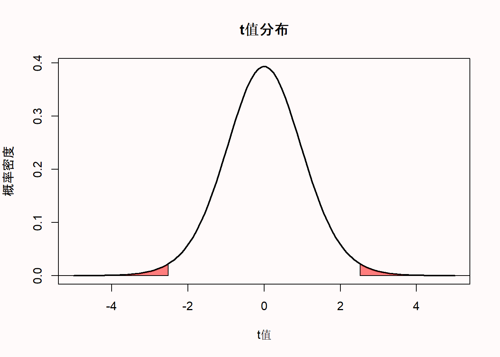
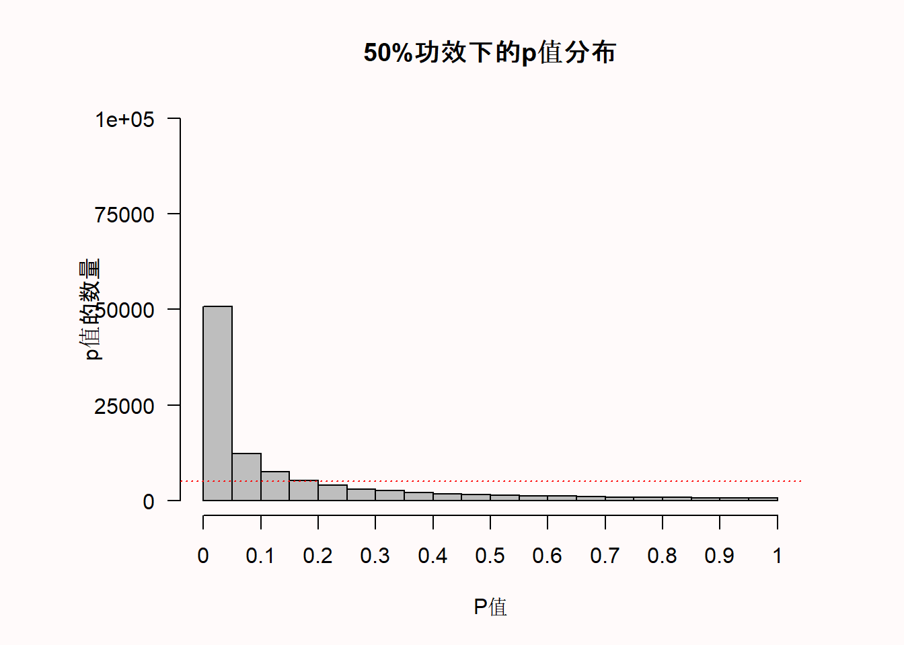
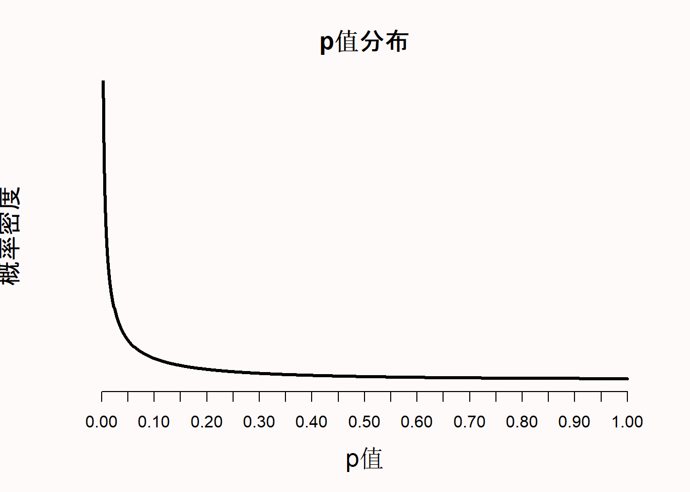
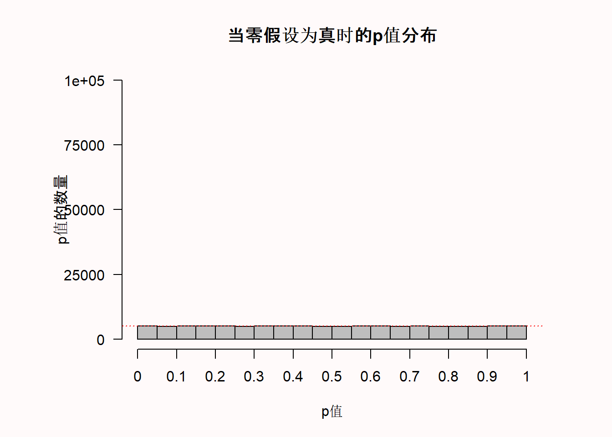
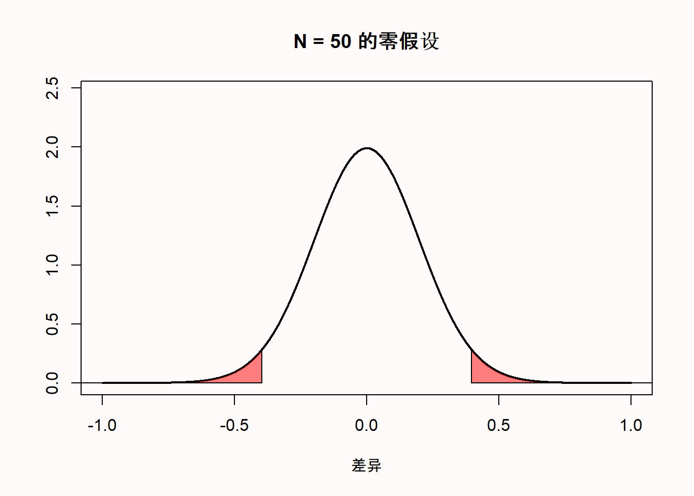
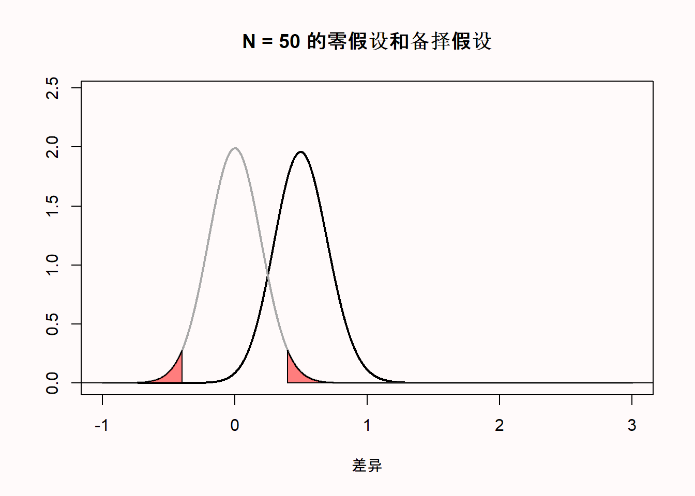
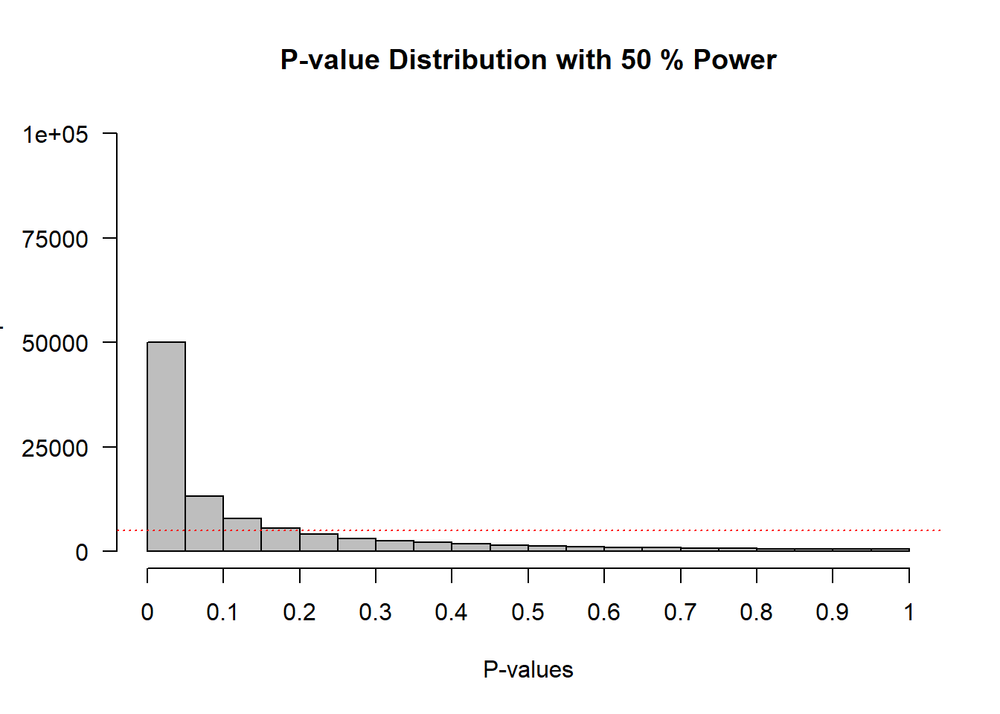

| Daniel的朋友 | Kyra的朋友 | |
|---|---|---|
| friend_1 | 9 | 9 |
| friend_2 | 7 | 6 |
| friend_3 | 8 | 7 |
| friend_4 | 9 | 8 |
| friend_5 | 8 | 7 |
| friend_6 | 9 | 9 |
| friend_7 | 9 | 8 |
| friend_8 | 10 | 8 |
| friend_9 | 9 | 8 |
| friend_10 | 9 | 7 |
1 使用 p值进行假设检验
研究者们可以通过收集数据来回答各种研究问题。他们感兴趣的是在不同条件下所收集到的数据结果是否有所差异。对于这个问题的答案是一个 方向性检验（ordinal claim）, 因为研究者对数据结果进行两两比较时，其平均值可能有大有小也可能没有差异。例如，研究者可能对这样的假设感兴趣：“假设条件A为：学生在进行了充分的学习后进行测试，条件B为学生将花费全部精力用于学习而进行测试，相对条件B来说，条件A的学习成果可能会更优异。在收集数据并得出有测试的学生的平均成绩较高后，研究者可以提出一个有方向性的假设，即与条件B相比，条件A的学生成绩更好。方向性假设仅能说明条件之间存在一定差异，但不能量化效应大小。
为了做出方向性检验，研究者通常依靠著名的假设检验的方法。 假设检验的一个部分包括计算p值， 并检验p值是否存在统计学上的显著差异。“显著”意味着某些东西是值得关注的。假设检验用于区分实证数据中的信号（值得关注的）和随机噪音。我们需要区分的是统计学显著以及实际效应显著，前者仅说明观察到的效应是信号还是噪点，而后者取决于效应的大小是否足够大，以便在现实生活中做出有价值的推断。因此，研究者们采用这种方法论的程序来决定是否做出差异性说明，或者作为一种防止验证性偏差的保障。在吉尼斯啤酒厂的内部报告中曾应用过上述统计检验方法，William Gosset（或称“student”，他开发了t检验）在1904年写道 (1904)：
一般来说，人们普遍会认为将实验结果的决定权全权交由研究者是相对危险的，因为他们可能带有一定偏见。因此，有人建议采用一个标量作为评判标准，这个标量是在一定数量的数据集中出现重大误差的概率。
然而根据这种期望，研究者们可能开始倾向于将数据解释为对其假设的支持，即便数据并不是这样。研究者提出差异性说明时，如果假设检验方法使用得当，是可以有效控制研究者自欺欺人的。正如Benjamini（2016） 所提出的，在区分信号和噪点时，p值是作为防止被随机因素诱导的第一道防线。有迹象表明，禁止使用p值将会使得研究者更容易做出错误结论。针对《基础与应用社会心理学》期刊施行禁止零假设（即无效应）显著之后，人们对后续发表的研究进行了定性分析，其中Fricker（2019）等人认为，相对于使用假设检验，且采用p < 0.05来说，当研究者仅用描述性统计时，我们发现他们很可能会过度解释和/或夸大他们的结果。研究者提出差异性说明时，如果假设检验方法使用得当，是可以有效控制研究者自欺欺人的。
1.1 关于p值的一些迷思
在我们厘清p值是如何计算之前，更重要是需要弄清在假设检验时，它将如何帮助我们做出合理的差异性说明。p值的定义是当零假设为真时，所得到的样本数据或更极端数据的概率。但是这个定义并未告诉我们该如何解释p值。
对于p值的解释方式取决于个人的统计思想。从Ronald Fisher1925年发表了《研究者统计方法论》一书之后，p值的应用开始广泛起来。在Fisherian的理论框架中，p值被描述为一个连续测量，这个测量用于描述所得观察数据以及与零假设之间的兼容性 (Greenland et al., 2016)。兼容性的区间在1（完全兼容）到0（完全不兼容）之间，且每个人都可以以一种统计上的“深思熟虑”来解释p值。依据Fisher (1956)所述，p值并不意味着真实世界的某个概率，而是以一种合理且完备的形式，来衡量拒绝他们所期望的假设的程度。Fisher试图将他的理念标化为一种”基础推论”，但这并没有得到其他流派的广泛采纳，如决策理论、似然比检验和贝叶斯推理。事实上，Zabell (1992) 写道：”基础推论“是Fisher的一个巨大失败”，尽管其他人表示希望它在未来会发展成一个有用的方法 (Schweder & Hjort, 2016)。Fisherian的p值描述了数据与单一假设的不兼容性，因此又被称为显著性检验。显著性检验受到限制的主要原因是，研究者只指定了一个零假设（\(H_0\)），而没有指定备择假设（\(H_1\)）。
Neyman和Pearson (1933) 在William Gosset和Ronald Fisher关于P值的见解的基础上，发展了一种叫做统计假设检验的方法。与Fisher提出的显著性检验相比，其主要区别是，在统计假设检验中，既制定了一个零假设，也规定了一个备选假设。在Neyman-Pearson的理论框架中，统计检验的目标是引导研究者在这两个假设方向上的的决策。根据统计检验的结果，当不知道假设是否为真的情况下，研究者通常暂时将零假设或备则假设为真。在心理学领域，研究者经常使用Fisherian和Neyman-Pearson二者理论框架的不完美结合版，但根据Dienes (2008) 的说法，Neyman-Pearson的理论方法是 “你在心理学学术期刊中看到的所有数据统计的基础逻辑”。
当进行Neyman-Pearson假设检验时，所得p值只是用于对比是否小于所选的 \(\alpha\) 水平，但它小多少并不重要。例如，如果使用0.01的 \(\alpha\) 水平，p=0.006和p=0.000001都会使研究者迅速做出论断，仿佛世界的真理就是备择假设所描述的。这与Fisherian的p值方法不同，Fisherian的p值越低，研究者在心理上更加容易拒绝他们所检验的零假设。Neyman-Pearson的假设检验不认为推论的目标是量化兼容性或依据的一种连续测量。相反，正如Neyman (1957) 所写的：
当我们对行为做出总结归纳时，应当承认每个正经研究的目的，都是在几个可选方案中为某一个方案提供依据。The content of the
简洁了当点说，人们可能会觉得在做某一行为的决策时，不应该拘泥于单一的统计测试结果，这一点经常被提出来作为对Neyman-Pearson统计推断方法的批评。然而，这种批评与Neyman所说的 “行为”的定义不径相同。诚然，实施一项新政策的决策不应基于单一的研究结果。然而，Neyman认为提出科学主张也是一种 “行为”，他曾写道（1957年，第10页），一项研究的结论阶段包括：
一种行为意愿或对某一行动的决策，也许就是对各种假设采取特定的态度。
Cox (1958) 写道:
可以这么说：当进行推论时，我们就是”决定”对总体进行某种类型的陈述，因此，只要不对决定一词进行过于狭义的解释，那么研究的统计决策就包含了推论的过程。其实重点是，统计推断的主要问题在于决定哪些类型的声明是有意义的，以及它们到底意味着什么。
因此，在Neyman-Pearson的方法中，p值就是意味着需要对哪类声明进行决策的基础。在科研中，类似的声明通常是以辅助假设的形式支撑着大多数新兴实验，或者说，为了使实验按计划进行，一些基础假设的提出必须是准确的 (Hempel, 1966)。例如，如果设计的实验中，被试能看到颜色是很重要的，我们的基础假设就是Ishihara test（一种色盲测试）能够成功识别哪些被试是色盲，且这个假设为真。
1.2 建立一个零模型
假设每组10人，一共有两组，我问他们有多喜欢《指环王》（LOTR）三部曲的加长版。这意味着我们的总样本量是20，每组的样本量为10。第一组的被试包括了我的朋友，而第二组的被试包括了我妻子的朋友。我们的朋友对问题进行了1~10的评分。因此，我的朋友们那组是8.7，我妻子朋友的那组均值是7.7。我们可以通过查阅原始数据以及绘制相关图表对两组数据进行比较。

我们可以看到两组人的数据是重叠的，但平均评分却相差1整分。所以，我们现在面临的问题如下： 两组之间的差异只是随机误差，还是说我的朋友比我妻子的朋友更喜欢《指环王》（LOTR）三部曲的加长版？
在零假设的显著性检验中，我们试图量化所观察到的差异（这时的均值相差1）或更极端差异的概率来回答这个问题，但这个前提是我的朋友和我妻子的朋友对《指环王》加长版的喜好程度并没有真正的差异，而我们只是在察看随机差异。这个概率称为p值。如果这个概率足够低，那我们就可以说存在差异，如果这个概率不够低，那我们只能说不存在差异。
零假设假定如果询问了无限多的朋友（我的朋友以及和我妻子的朋友两个组）他们有多喜欢指环王，这两个海量的群组之间的差异为0。然而，从任何总体中抽取某一样本，随机误差通常不为0。我们可以建立一个零模型来衡量所得观测数据的期望误差，如果只有随机误差，那就可以知道合理的期望将会是如何，即当总体之间没有实质差异时，组间的随机误差有多大。
使用标准化分布来建立一个零模型是很便捷的，因为这样计算某一值的概率相对更容易，且不用考虑其余维度。有一个衡量差异的零模型是t分布，它可以用于描绘从总体抽样时的差异情况。有一个衡量差异的零模型是t分布，它可以用于描绘从总体抽样时的差异情况。这种零模型是建立在某种假设之上的。在t分布的情况下，这个假设的分布属于正态分布。然而事实上，依据统计方法所提出的假设从来没有得到过完美的匹配，所以，这就是为什么统计学家们在探索违反假设对方法论的影响。当违反假设对统计推断的影响足够小时，那么统计检验的方法仍然是有效且实用的。
我们可以通过概率密度函数来衡量当总体中不存在差异时的预期t值分布。下面是一个自由度（df）为18的t分布的概率密度函数图，它与我们的例子一致，即对应我们从20个朋友那里收集的数据（df=N-2，两个独立组）。对于连续分布来说，概率是由无限多的点定义的，任何一个点的概率（例如，t=2.5）总是零。概率是按区间测量的。因此，计算的p值并不是所得观测数据（即某一点）的概率，而是所得观测数据或更极端数据（即一个区间）的概率。这就形成了一个可以计算面积的概率区间。
1.3 计算p值
t值可以用样本均值、总体均值、样本的标准差和样本大小来计算。然后计算所得观测数据或更极端数据的t值概率，我们就得到了p值。将上述两组朋友的电影评分进行对比，依据双侧t检验可得到的t值为2.5175，p值为0.02151。
Two Sample t-test
data: df_long$rating by df_long$`Friend Group`
t = 2.5175, df = 18, p-value = 0.02151
alternative hypothesis: true difference in means between group Daniel的朋友 and group Kyra的朋友 is not equal to 0
95 percent confidence interval:
0.1654875 1.8345125
sample estimates:
mean in group Daniel的朋友 mean in group Kyra的朋友
8.7 7.7 我们可以绘制出t分布图（df=18），并高亮了t值为2.5175和-2.5175的两个尾部区域。

1.4 哪个是你想要的p值
有一个非常有教学意义的视频叫“p值之舞”，Geoff Cumming觉得p值因实验的不同而有所差异。然而，这并不是他在视频中提到的 “不信任p值”的理由。相反，他认为重要的是要清楚地了解p值是如何分布的，以防止误用。因为p值是统计中频率学派的部分，我们需要研究的是从长远来看能预期得到什么。因为我们永远不会成千上万次的做一个实验，而且我们也无法将所有的时间精力投入至研究中，所以最好的办法就是通过计算模拟求得一个长远的结果。
请大家花一些时间思考一下两个问题。如果效应真实存在，并且你重复这个实验成千上万次了，你可能会得到一个什么样的p值？同样，如果效应并不存在，你也同样重复这个实验成千上万次了，你又会得到什么样的p值？如果你不知道答案也没有关系，你现在就能学会。如果你不知道答案，或许应该值得反思一下，为什么并不了解p值的基本知识。如果你和我一样，根本没有被教过这个。但正如我们将看到的，这对巩固理解p值该如何解释至关重要。
你能期望的p值完全由研究的统计功效决定，或者说，如果效应真实存在，你将得到显著效应的概率。统计功效的范围在0~1。我们可以通过模拟独立t检验来说明这一点。比如说，我们来模拟一群人的智商分数。我们知道智商的标准差是15。现在，我们假设某个样本组的平均智商为100，而另一个组为105。随后，我们来检验这两组人的IQ是否不一致（但是我们知道正确答案是“是”，因为我们就是这么模拟的数据）。
p <- numeric(100000) # store all simulated *p*-values
for (i in 1:100000) { # for each simulated experiment
x <- rnorm(n = 71, mean = 100, sd = 15) # Simulate data
y <- rnorm(n = 71, mean = 105, sd = 15) # Simulate data
p[i] <- t.test(x, y)$p.value # store the *p*-value
}
(sum(p < 0.05) / 100000) # compute power
hist(p, breaks = 20) # plot a histogram在模拟时，我们生成了一个关于IQ分数的正态分布（n = 71，均值M=100或105），标准差=15）。然后我们进行独立t检验，求得p值，并生成p值分布图。

我们可以看到x轴是20个条形柱分别代表着从0到1的p值，Y轴则是这些p值的频率。水平的红色虚线表示5%的 \(\alpha\) （位于100.000*0.05=5000的频率），但你现在可以忽略这条线。图表的标题给出了模拟研究的统计功效（假设 \(\alpha\) 为0.05时）： 这项研究有50%的功效。
模拟的结果描绘了p值的概率密度函数。概率密度函数给出了在t分布中，某个特定值(比如如图 Figure 1.1 那样)的随机变量的概率。因为p值是一个随机变量，我们可以用它的概率密度函数来绘制p值分布图(Hung et al., 1997; Ulrich & Miller, 2018)，如图 Figure 1.3。在线上的Shiny应用程序中，你可以改变样本大小、效应量大小和 \(\alpha\) 水平，以便观察他们对p值分布的影响。增加样本量或效应量大小将增加p值分布的陡峭程度，这意味着观察到小p值的概率增加。p值分布是检验的统计功效的函数。

当效应不存在时，p值是均匀分布的。这意味着，当零假设为真时，每一个p值都有同样的可能性被观察到。换句话说，当不存在真正的效应时，0.08的p值和0.98的p值含义一样。我记得当我第一次了解到均匀的p值分布时，我觉得这非常反常（远在完成我的博士学位之上）。但是如果保证零假设为真，p值永远大于我们所设定的 \(\alpha\) 水平时，那么p值为均匀分布似乎又是合理的。如果我们把 \(\alpha\) 水平设为0.01，1%的概率观察到的p值小于0.01，如果我们把 \(\alpha\) 水平设置为0.12，12%的概率观察到p值小于0.12。但是，这只有在零假设（\(H_0\)）为真时，p值是均匀分布的情况下才会发生这种情况。

1.5 林德利悖论
随着统计功效的提高，一些稍微低于0.05的p值（如p=0.04），相比于有效应，它更可能在没有效应时出现。这就是著名的林德利悖论 (Lindley, 1957)，或称杰弗里-林德利悖论 (Spanos, 2013)。因为p值的分布是统计功效的函数 (Cumming, 2008)，功效越高，p值的分布就越右偏（即越有可能观察到小的p值）。当不存在真实的效应时，p值是均匀分布的，1%的概率可以观察到p值在0.04和0.05之间。当统计功效极高时，不仅大多数p值会低于0.05，甚至会低于0.01。通过图 Figure 1.5 我们可以看到，在高功效下，当效应真实存在时，非常小的p值（例如0.001）就比无效应时更容易被观察到（例如，当P值为0.01时，代表99%功效的黑色虚线落在灰色水平线之上，这时灰色曲线代表着零假设为真时p值的均匀分布）。
然而令人迷惑的是，当p值为0.04时，则更可能是没有效应，即零假设（\(H_0\)）为真时，我们任然可以有非常高的功效，例如在图 Figure 1.5 中所示，当p等于0.04时，零假设为真时的p值分布的密度要比99%功效时要高。所以，林德利悖论说明，0.04的p值可能在统计学上是显著的，但同时也为零假设提供了一定证据。从Neyman-Pearson的方法来看，我们将提出一个最大错误率为5%的概念，但从似然比或贝叶斯的方法来看，我们可以得出某种结论是：相对于备择假设，我们的数据信息提供了有利于零假设的证据。林德利悖论说明了不同的统计学派何时会得出不同的结论，以及在不考虑检验统计功效的情况下，为什么p值不能直接被解释为结论的衡量标准。虽然可能没有必要，但研究者可能希望避免下述情况：那就是频率学派的学者们会根据p<0.05拒绝零假设，但是当前检验的实验数据倾向于零假设而不是备择假设。这可以通过降低 \(\alpha\) 水平作一个样本量的函数来实现Good (1992)，这一点将在“误差的控制”一章节进行解释。

1.6 正确地解释和报告p值
虽然从严格的Neyman-Pearson方法的角度来看，报告p< \(\alpha\) 或p> \(\alpha\) 就足够了，但研究者还是应当报告确切的p值。这便于后续再次分析结果时使用 (Appelbaum et al., 2018)，也便于并其他研究者将p值与他们希望使用的 \(\alpha\) 水平进行比较 (Lehmann & Romano, 2005)。因为所发表的结论是使用已知最大误差率的方式进行的，p值永远不允许你肯定地陈述任何事情。即便我们把 \(\alpha\) 水平设定为0.000001，但任何一个结论都可能是错误的，Fisher (1935) 提醒我们，即使是”百万分之一的几率”仍旧会发生，既不低于也不高于其某个恰当的概率，但只要发生在我们身上就是0和1的概率，纵使我们会非常惊讶为什么如此小的概率仍会发生在我们身上”。这就是重复研究在科学领域很重要的原因。任何单一的发现都可能是一种侥幸，但如果几个重复的研究都能得到相同的结果，那么这种概率很快就会变得非常小。这种不确定性可能并没有反映在学术写作中，因为可以看到研究者会使用 “证明”、“显示”或 “已知”等字眼。在做完假设检验之后，有个稍长但更准确的说法是：
我们宣称了一个有或没有意义的效应，但也同时承认，如果学者们使用这种方法论提出结论，从长远来看，他们最多只有在 \(\alpha\) %或\(\beta\)%上被误导，我们认为这是可以接受的。在不久的将来，除非出现新的数据或信息证明我们是错的，否则我们将假定这一结论是正确的。
请记住，在Neyman-Pearson的理论框架下，研究者提出某种说法，但是这些说法不一定是真实的。例如，OPERA合作组织在2011年报告说，他们所得到的观测数据似乎揭示了中微子的速度超过了光速。这一说法的第一错误率是百万分之0.2，假定错误纯粹是由随机误差造成的。然而，实际上并没有研究者相信这一说法是真的，因为理论上中微子的运动速度不可能超过光速。事实上，后来发现是由于设备故障所导致的数据异常：一根光纤的连接不当，还有一个时钟振荡器的走的过快。然而，在提出这一说法的同时也公开邀请学界提供新的数据或信息，来证明这一说法有误。
当学者们在Neyman-Pearson统计推断方法下”接受”或”拒绝”一个假设时，他们并没有表明任何关于假设的信念或结论。相反，他们宣称自己是基于预设规则（即观察到的数据反映了世界的某种状态）的一种波普尔式基本声明。这些基本声明描绘的是已经进行的观察（例如，“我观察到了一只黑天鹅”）或已经发生的事件（例如，“接受间隔练习训练的学生，比不接受训练的学生在考试中表现得更好”）。
也就是说当下的某种声明与我们已经观测到的数据相关，但与我们用于预测的理论无关。某个声明与观测数据相关，因为它是一种统计推断，但它与理论无关，因为理论需要理论推断。数据永远无法“证明“一个理论是对还是错。一个基本声明可以证实一个从理论推导出来的预测，也可能无法证实。如果从一个理论中推导出的许多预测都得到了证实，我们就会越来越相信这个理论是接近真理的。这种理论的“接近真理性”叫做逼真性 (Niiniluoto, 1998; Popper, 2002)。报告假设检验时会出现的一个更短的声明是“p=.xx，即我们的预测在y%的α水平下得到证实，或者“p=.xx，即我们所关注的效应量在对应的统计检验力下，预测没有被证实”。 \(\alpha\) 水平或者统计检验力往往只在文章的实验设计部分被提及，但是在结果部分重复他们能够提醒读者注意与你的声明相关的错误率。
甚至当我们做出正确的声明时，它的底层理论也可能是错误的。Popper (2002) 提醒我们“客观科学的实证基础并不是绝对的”。他争辩科学并不建立在坚固的基石之上，而是在沼泽中打下的木桩上，并指出“所以就目前而言，当确信桩的牢固程度足以承载结构后，我们就会停下来”。如Hacking (1965) 写道：“拒绝不是反驳。多数拒绝只是试探性的”。所以当拒绝零模型时，我们是试探性的，并且知道有犯错的可能性，而不是一定要相信零模型是错的，以及我们用来进行预测的理论是对的。对Neyman (1957) 而言，推断行为是一种“遵循当前实验结果，以一种特定方式去造就未来（直到被新的实验所迭代）的意志。所有的科学知识都是暂时的。
一些统计学家建议把p值解释成对证据的度量。例如，Bland (2015) 提出p值可以被解释成一种对证据强度的“即粗略又完备”的指示，p > 0.1表示“很少或没有证据”，0.01 < p < 0.05表示“有证据”，p < 0.001表示“证据很强”。从前面关于林德利悖论和p值均匀分布的讨论中可以看出这是不正确的 (Johansson, 2011; Lakens, 2022)。如果你想量化证据，请看关于似然性或贝叶斯统计的章节。
1.7 避免p值的常见误解
p值是在零假设为真的情况下，实际观测到的数据的概率或者临界值的概率。为了理解p值能说明什么，我们尤其要注意p值不能说明什么。首先，我们需要知道”零假设为真”是什么，以及当零假设为真时，数据的分布形态是怎样的。尽管零假设可以被设定为任意数值，在这里我们规定零假设就是均两组值差异为0。例如，在实验条件下和控制条件下计算两组因变量的差异。
区分零假设（假设在总体中平均值差异正好为0）和零模型（当零假设为真时，我们应该观察得到的数据模型）非常重要。零假设是一个位于0的点，而零模型则是一个分布。在教科书或者统计分析软件中，它门被可视化，可能会出现下面这样的图片。你可以看到，横轴代表t值，并且临界值t在1.96-2.00之间（取决于样本量）。之所以用t值，是因为比较两组差异的统计检验是基于t分布的，当实际得到的t值大于临界值t时，我们就认为p值在统计上显著。
我个人认为，如果绘制的零模型是均值差的而非t值的，解释起来会更加清楚。所以在下方，你会看见当比较样本量为50的两组数据时，均值差的零模型，假设它们的真实差异为0，两组的标准差均为1。因为它们的标准差为1，你也可以把均值差异解释为科恩d效应量。所以，这也是样本量为50的样本在做独立样本t检验，科恩d为0时的分布。

首先要注意到的是，我们期望的零模型的平均值是0。观察X轴，我们可以看到绘制的分布是以0为中心的。但是，即使总体的均值差是0，这也不意味着每个从总体中抽出的样本的均值差都为0。样本的值会围绕总体的值变化，是一个标准差和样本量的函数。
图中Y轴是概率密度，它代表的是连续分布中得到某一特定值的可能性。我们可以看到，最有可能得到的均值差是总体的真实值0，离0越远的值得到的可能性就越小。图中有两个区域标红了，这些区域代表分布的左尾部2.5%的极端值，以及分布的右尾部2.5%的极端值。它们共同构成了当真均值差恰好为0，样本量为50时，抽样分布的5%的极端值的区域。当测量的值落在这个区域，相应的统计检验就认为两组在5%的α水平上达到显著差异。换句话说，不超过5%的均值差是离0足够远，会被认为是小概率事件的。因为零假设为真，如果测量得到这种小概率的平均值差异，即红色区域，则是犯了1型错误。
让我们假设上图中的零模型是正确的，并且我们测量得到两组之间的平均值差异为0.5。这种测量得到的差异落在分布右尾的红色区域。这意味着，在真实平均差值为0的假设下，测量得到的平均差值相是小概率事件。如果真实的平均差值为0，概率密度函数表明我们不应该测量得到平均差值为0.5。如果我们计算这个观测值的p值，它将低于5%。观测到距离0远至0.5(当我们做双尾检验时，要么在均值的左边，要么在均值的右边)的平均差异的概率小于5%。
我更喜欢用原始分数而不是t值来绘制零模型的另一个原因是，当样本量增加时，我们可以看到零模型是如何变化的。当我们收集5000个而不是50个观测值时，我们看到零模型仍然以0为中心——但在现在的零模型中，我们预计大多数值将非常接近0。

由于均值差的分布是基于均值差的标准误，所以5000样本量的分布要窄得多。这个值是根据标准差和样本量计算的，如下所示:
\[\sqrt{\frac{\sigma_{1}^{2}}{n_{1}}+\frac{\sigma_{2}^{2}}{n_{2}}}\] 这个公式表明，均值差的标准误是每个组的标准差（σ）的平方除以该组的样本量，加在一起，然后取平方根。样本量越大，除以的数字就越大，因此均值差的标准误就越小。在n =50的例子中，有标准差:
\[\sqrt{\frac{1^{2}}{50}+\frac{1^{2}}{50}}\] 因此，当n = 50时，两组均值差的标准误为0.2；当n = 5000时，均值差的标准误为0.02。假设抽样分布为正态分布，95%的观测值落在1.96 个标准误之间。因此，对于样本量为50的样本，均值差应该在-1.96 * 0.2 = -0.392和+1.96 * 0.2 = 0.392之间，我们可以看到，当n = 50时，红色区域大约从-0.392到0.392。对于样本量为5000的样本，均值差应在-1.96 * 0.02和+1.96 * 0.02之间，也就是说，应该介于-0.0392到0.0392之间。由于样本量较大（n = 5000），观测得到的均值差应该比较小样本（n=50）中观测得到的均值差更接近0.
如果我们抽出n = 5000的样本，并且观测到0.5的均值差，我们要清楚，这样的概率比起收集50个观测值发现0.5的均值差的要更小。我们现在几乎已经准备好介绍关于p值的常见误解，但在此之前，我们需要引入一个当零假设不为真时的数据模型。如果我们不是从一个真实均值差为0的模型中抽样，那么得到的备择模型会是什么样呢？一些软件 （比如 G*power, 见 图 Figure 1.8)会同时显示出零模型（红色曲线）和备择模型（蓝色曲线）:

当我们做一项研究时，我们不知道真正的均值差是多少（如果我们已经知道了，为什么还要做这项研究?）但是，让我们假设有一个全知的存在，按照Paul Meehl的说法，我们称呼祂为”无所不知的琼斯”。在我们从总体里收集50个观测值之前，“无所不知的琼斯”就已经知道了总体的真实均值差为0.5。那么在备择模型中，均差值就应该在0.5周围变化。下图显示了零假设成立时的数据模式(用灰线表示)，和备择模型(用黑线表示)，即假设总体中存在0.5的真实均值差的模型。

但是”无所不知的琼斯”也可以说真实均值差是一个更大的值。假设在另一个研究中，在我们抽样之前，祂就说真实均值差是1.5。那么此时零假设模型不变，备择假设模型会向右移动。
您可以在此应用程序上在线调整备择模型和零模型：http://shiny.ieis.tue.nl/d_p_power/. 该应用程序允许你设定参加t检验的两组的样本量（从2到无穷大）、均值差（从0到2）和alpha水平。在图中，红色区域表示I类错误，蓝色区域表示II类错误（具体我们将在之后讨论）。该应用程序也会显示临界值：会有一条垂直线（样本量为50时，落在均值差为0.4处）和一句提示语——大于0.4代表效应显著。虽然没有提示语，我们应该知道此时小于-0.4也显著。这个应用程序也适用于双侧的独立t检验。
你可以看到，在表示临界均值差的竖线的左边有一个蓝色区域，它是备择模型的一部分。这就是犯II类错误的概率（或者代表1-统计力）。如果一个研究的统计力是80%，代表我们能观测到的80%的均值差都会落在代表临界值的那条线的右边。如果备择假设为真，但是我们又得到了小于临界值的效应，那么即使真的存在效应，此时的p值应该大于0.05。你可以在应用程序中验证，当样本量越大，整个备择模型就越靠右，统计力也就越大。同时你也可以看到，样本量越大，分布越窄，低于临界值的分布越少（只要真实总体均值大于临界值）。最终，α水平越大，临界值代表的均值差越向左移，低于临界值的备择分布的面积就越小。
该应用程序还绘制了3个图，是不同α水平、不同样本量和不同真均值差下的功率曲线函数。用户可以在应用程序中调整这三个值，了解每个变量如何影响零模型和备择模型，看到达到统计水平上显著的均值差的大小和犯Ⅰ类以和Ⅱ类错误的概率。
到目前为止，零模型的几个方面应该已经变得逐渐清晰。首先，传统零假设中，总体均值差为0，但在你抽出的任何样本中，观测的均值差都落在一个以0为中心的分布中，通常会略大于或略小于0。其次，该分布的宽度取决于样本量和标准差。研究的样本量越大，分布就越集中于0。最后，当观测到的均值差落在零模型尾端时，结果被认为是出人意料的。离0越远，这个结果就越令人惊讶。但是，当零模型为真时，这些令人惊讶的结果发生的概率为α水平（也被称为Ⅰ类错误）。请记住，当研究人员得出总体存在差异时，但实际的均值差为0时，就会发生第一类错误。
我们现在终于准备好可以厘清一些关于p值的常见误解了。让我们来回顾一下科学文献中报告过的一系列常见误解。其中一些也许听起来只是语言表达问题。乍一看，人们很容易认为这句话传达了正确的想法，即使在书面形式上并不正确。然而，当一个陈述在形式上不正确时，它就是错误的。正是因为人们会经常误解p值，所以在形式上正确解释p值是非常重要的。
1.7.1 误解 1：p值不显著意味着零假设为真。
此误解的一个常见版本体现在句子’因为p > 0.05， 我们可以推断效应不存在’中；这句话也可以是’差异不存在（p > 0.05）’。
在谈论细节之前，我想提醒你一个简单的事实，它会使你辨明许多关于p值的误解：p值是有关数据概率的解释，而非一个假设或理论的概率的解释。不论何时你看到p值被用于解释一个假设或理论的概率，你就知道事情有些不太对。有关假设的例子有：‘零假设为真’或’备择假设为真’，它们都是指零模型或者备择模型为真的概率是100%。更微妙的表述有’观测到的差异不是出于偶然’。当零假设为真时，观测到的差异只是’由于偶然’（而不是由于真实差异的存在），与之前一样，这句话是指零假设100%为真。
当你得出’效应不存在’或者’不存在差异’的结论时，你也就是在说零假设100%为真。但是由于p值是有关数据概率的解释，你应该避免仅基于p值去解释理论存在的概率。p值的设计是用来帮助你识别嘈杂的数据生成（即真实情况）中意料之外的结果。它并不能量化一个假设为真的概率。
让我们举一个具体的例子来说明为什么不显著的结果并不意味着零假设就是正确的。在下图中，无所不知的琼斯告诉我们，真均值差为0.5。我们可以从图中看出，当备择假设为真时，期望的均值差的可视化分布以0.5为中心。我们观测到的均值差是0.35。这个值还没有极端到足以在统计学上与0有显著差异。同样从图中可以看出，这个值没有落在零模型的红色区域（因此，p值并不小于我们规定的α水平）。
然而，鉴于真均值差是0.5，观测均值差为0.35不光很可能发生，更可能是在备择模型而非是零模型上观测到。你可以看到这一点，因为在零模型中，均值差为0.35的概率密度曲线的高度约为0.5，在备择模型中概率密度曲线的高度则接近1.5。详情请参见可能性一章。

如果我们假定零假设为真，所有的p值都告诉我们均值差为0.35并不是非常出人意料。这可能有很多原因。在真实世界中，并不存在无所不知的琼斯告诉我们真均值差，就像上图所示，有可能存在一个真实效应。
那么我们应该怎么陈述呢？解决方案很微妙，但也很重要。让我们再看看之前做的两个错误陈述的例子。首先，“因为p > 0.05，我们可以推断效应不存在”这个陈述是错误的，因为很有可能效应是存在的（请记住p值是有关数据的解释而不是有效应或无效应的概率）。 费希尔对于p值的解释是我们可以得出一个小概率事件的发生或者零假设是错误的（他的原话是：“要么是发生了及其罕见的事件，要么是随机分布的原假设不正确”）。这可能听起来像是有关理论的概率的解释，但实际只是在p值很小时，对两种可能出现的场景的陈述（你犯Ⅰ型错误或者备择假设才为真）。真阳性和假阳性都是可能的，并且我们不量化两种可能性出现的概率（例如，并不是说零假设为真的概率是95%）。从内曼-皮尔逊的角度，p > .05意味着我们不能拒绝零假设，因为我们有着5%以下的预期错误率。
如果你对于推断效应缺失感兴趣，零假设检验不是你需要的工具。零假设检验回答的问题是’在期望的错误率下，我可以拒绝零假设吗？’。当p > 0.05，你不能拒绝零假设时，零假设是真还是假是不能仅仅基于p值得出的（就像’无’的概念：既不是真也不是假）。幸运地是，已经开发了别的统计方法来回答效应缺失的问题，例如 等效检验, 贝叶斯因子和贝叶斯估计 (请参见 Harms & Lakens (2018), 了解概述).
第二个不正确的说法是’没有差异’。这个陈述改正起来要容易些。你可以写’没有统计学上的显著差异’。当然，两者有点重复，因为你基本上在用两种不同的方式说p值大于α水平，但至少这个说法在形式上是正确的。‘没有差异’和’没有统计学上的显著差异’可能听起来差不多，但前者你实际上在说’差异为0’，而后者你是在说’差异不足以使p < .05’。虽然我从未见过有人这样做，但是更完整的说法应该是’鉴于样本量是每组50，α水平是0.05，观测差异只有大于0.4才能达到统计学上的显著，由于我们观测的差异是0.35，因此我们不能拒绝零假设’。如果这看起来不是一个令人满意的结论，请记住，零假设检验的设计不是为了得出效应缺失的有趣结论——你需要了解等效检验，来得到有关零效应更令人满意的答案。
1.7.2 误解 2：p值显著意味着零假设为假。
这是上一个误解的另一面。基于这种误解的错误陈述有’p < .05，因此效应存在’，或’两组之间存在差异，p < .05’。像之前一样，这些陈述都是在暗指零假设为假的概率是100%，备择假设才为真。
举一个简单的例子，说明为什么这些极端的语句是不正确的。假设我们使用下面的命令在R中生成一系列数字：
[1] -0.49583703 1.22688417 -0.70441825 1.86372563 -0.60548040 -0.46352706
[7] 0.43590303 -0.46346629 -0.07368624 1.84806812 1.14203261 0.21727180
[13] 2.44614218 1.08825594 0.61916507 1.00263613 -0.61468964 -0.56820501
[19] 0.07783270 -0.63218418 0.37382954 0.51147710 -0.07768900 0.10721868
[25] -0.59325432 0.93489187 0.08242260 0.11267781 -0.10594944 -0.73495237
[31] 1.56670307 -2.00496332 1.47440873 -0.35951925 -1.75494681 -1.43177779
[37] -0.17951753 -0.63985698 1.00616579 -0.43632815 1.71631617 1.16485759
[43] 0.25415717 1.18004356 -0.90220254 -1.30430712 0.99051752 -0.05753663
[49] -0.89670222 -0.14184483该命令会从一个平均值为0、标准差为1的分布中随机生成50个观察值（从长远来看——生成的每个样本的平均值和标准差都会有所不同）。想象我们运行这个命令一次，得到一个平均值为0.5的分布。下面的图画出了这个分布。假设我们可以做它和0的单样本t检验，得到p < .05，此检验告诉我们，我们观测到的数据与0有显著差异，但此时R函数中随机数生成器依然按照原来的指令运行，生成的数据的真实均值为0。

p值显著并不能让我们得出零假设（“随机数生成器照常运行”）为假的结论。的确，我们生成的50个样本的平均值是令人惊讶的极端值。但是较低的p值只是告诉我们这个观测结果是出人意料的。当零假设为真时，我们只会在很低的概率下得到这个令人惊讶的观测结果——但它仍有可能发生。因此，显著的结果并不意味着备择假设就是对的——也有可能是出于Ⅰ型错误，就如同上面的例子，只有无所不知的琼斯知道是这种情况。
让我们重新审视这个错误陈述’p < .05，因此效应存在’。正确理解显著的p值，要求我们承认显著结果是Ⅰ型错误的可能性。请记住，费希尔会得出的结论是”要么是发生了及其罕见的事件，要么是随机分布的原假设不正确”。对于内曼-皮尔逊统计的正确解释是：“我们可以当作零假设为假，从长远来看，我们错的时间不会超过5%”。注意我们使用了’当作’这个词，这并不是在说任何特定的假设是真还是假，仅仅是指出，如果任何时候当p < α，我们就当作零假设为假，那我们犯错误的频率将小于α百分比的时间。
这两种正式的陈述都有一点冗长。在科学文章中，我们经常读到简短点的陈述，比如：“我们可以拒绝零假设”，或者”我们可以接受备择假设”。这些陈述可能是假定读者会自己加上”长期来看，会有5%的错误概率”这句话。但是，至少在第一次陈述时，可以加上”长期看有5%的错误率”这个声明来提醒读者。
在上面的例子中，我们有一个非常强的主观先验概率，即R中的随机数生成器可以运行。其他可以纳入分析这种主观先验概率的统计方法有 贝叶斯统计 或者 假阳报告概率。在频率统计雪中，你需要多次重复你的研究。你会时不时地观测到Ⅰ类错误，但不太可能连续三次都观测到。或者，你也可以在单次研究中降低α水平，来降低犯Ⅰ类错误的概率。
1.7.3 误解 3：p值显著意味着发现了一个实际重要的效应。
在解释p值时，存在一个普遍的问题，即在日常语言中，“显著”意味着”重要”，因此”显著”的结果常被认为是一个”重要”的效应。然而，一个效应是否重要与它是否不等于零，或者说这个效应有多大是完全不同的两个问题。并不是所有的效应都用实际的影响。 这个效应越小，被人注意到的可能性就越小，但这个效应仍然可能会社会生产水平产生很大的影响。因此，正确的理解应该是，统计上的意义并不能回答一个效应在实践中是否重要，或者是否有”实际意义”的问题。要回答效应是否重要的问题，您需要进行成本效益分析。
这个实际意义的问题经常出现在样本量非常大的研究中。正如我们之前所看到的，随着样本量增加，零值周围的概率密度分布变得越来越窄，这被认为是p值无限接近于0。
如果我们为一个非常大的样本量（例如，每组n=10000）绘制零模型，我们可以看到，即使是非常小的均值差（比0.04更极端的差异）也会被认为是”出人意料的”。这仍然意味着，如果在总体中真的没有差异，你观察到均值差大于0.04的将不到5%的时间，在长期观测中，95%的观测均值差将小于0.04。但是，要论证这种效应的实际意义就变得更加困难了。想象一下，一种特定的干预措施成功地改变了人们的消费行为，当实施这个干预措施时，人们每年可以节省12美分。很难说这种效应如何让任何一个个体感到开心。然而，如果把这笔资金加起来，它将产生超过200万美元，可用于治疗发展中国家的疾病，会产生很大的影响。如果我们的目标是让个人更快乐，干预的成本可能会被认为过高，但如果目标是为慈善机构筹集200万美元，它可能会被认为是值得的。
心理学中并不是所有的影响都是可以相加的（我们并不呢转移或者结合0.04的幸福感），因此往往很难论证主观感受中小效应的重要性(Anvari et al., 2021).。成本效益分析可能能显示很小的效应也很重要，但情况是否如此是不能从p值中推断出来的。
请注意，这与对p值本身的解释并没有关系：如果零假设为真，p < 0.05仍然正确表明我们观测到的数据是出人意料的。然而，数据出人意料并不意味着我们就需要关心它。在这里造成困惑的主要是语言标签”显著”——“显著”应该理解为是”出乎意料的”效应，但不一定是”重要的”效应，这样想可能会减少困惑。
1.7.4 误解 4：如果你得到了显著结果，你犯Ⅰ型错误（假阳性）的概率是5%。
此误解是对p值是”偶然观察到显著结果的概率”这一错误说法的一种可能解释。试设想，我们收集了20个观测值，并且无所不知的琼斯告诉我们零假设为真（就像上面的例子里，我们在R中生成随机数一样）。这意味着我们正从下图的分布中进行抽样。

如果这是真实情况，那意味着100%的时间里发现的显著结果，都是假阳性（或者犯了Ⅰ型错误）。因此，100%的显著结果都是Ⅰ型错误导致的。
区分数据收集和结果分析之前和之后的概率是非常重要的。犯Ⅰ型错误的概率是指，在未来可能完成的所有零假设为真的研究中，低于5%的观测到的均值差会落到分布的红色尾部区域。但是当观测的结果落到了尾部区域，p<α，我们又知道零假设为真时，那么这些显著结果就是Ⅰ型错误导致的。如果阅读得足够仔细，你就会发现这个误解实际是设问方式不同导致的。“如果我发现p<.05，零假设为真的概率是多少？”和”如果零假设为真，观察到显著结果的概率是多少？“是两个完全不同的问题。p值只回答后一个问题。第一个问题在数据收集前没有主观判断零假设为真时是无法回答的。
1.7.5 误解 5：1减去p值是重复实验能得到相同效应的概率。
我们不可能计算出一种效应重复出现的概率 (Miller, 2009)，因为存在太多未知的因素影响效应重复的概率，其中最主要的因素就是真均值差。如果我们是无所不知的琼斯，知道真均值差的值（例如，两组之间的差异为0.5分），我们就能知道这个检验的统计力。统计检验力是指当备择假设为真时（即，效应存在），我们能发现显著结果的概率。例如，阅读应用程序中左侧栏里的文本，我们可以发现每组的样本量为50，α水平为0.05，真均值差为0.5，发现显著结果（或称统计检验力）的概率为69.69% 。 如果我们在这种情况下观察到显著的效应（例如，p=0.03），并不意味着我们有97%的可能重复该次研究（样本量相同）也会得到显著的结果。重复研究得到显著结果的概率取决于统计检验力，而非之前研究的p值。
我们可以从最后一个误解中得到的事实是，显著结果复现的概率取决于真实的效应是否存在。换句话说，像上面的例子一样，如果存在一个真实的效应，统计检验力的水平就代表着能够重复观察到显著结果的概率（例如，统计检验力为80%意味着我们有80%的时间能够观察到显著的结果）。另一方面，如果零假设为真（例如，效应为0），那么显著的结果仅仅会在接近我们选择的α水平的概率上被观察到（例如，如果α为0.05，就有5%的可能犯Ⅰ型错误）。因此，如果原始研究中正确地观测到了一个效应，在重复实验中观察到显著结果的概率取决于统计检验力；如果原始研究中正确地观测到了零效应，在重复实验中观察到显著结果的概率则取决于α水平。 在实践中，还存在很多其他因素决定效应是否能重复。判断效应能否重复的唯一方法就是去复现实验。如果你想要知道判断文献里的结果能否复现有多难，你可以在80小时内重复此实验。
1.8 自我测试
###你能想到的有关p值的问题
将下面的代码复制到 R 并运行代码。您可以单击代码部分右上角的“剪贴板”图标，将所有代码复制到剪贴板，这样您就可以轻松地将其粘贴到 R 中。
nsims <- 100000 # number of simulations
# 模拟的次数
m <- 106 # mean sample
# 样本均值
n <- 26 # set sample size
# 设置样本量大小
sd <- 15 # SD of the simulated data
#模拟数据的标准差
p <- numeric(nsims) # set up empty vector
# 设置一个空向量
bars <- 20
for (i in 1:nsims) { # for each simulated experiment
# 对于每次模拟实验的循环
x <- rnorm(n = n, mean = m, sd = sd)
z <- t.test(x, mu = 100) # perform the t-test # 进行T检验
p[i] <- z$p.value # get the p-value #得到p值
}
power <- round((sum(p < 0.05) / nsims), 2) # power # 统计功效
# Plot figure # 画图
hist(p,
breaks = bars, xlab = "P-values", ylab = "number of p-values\n",
axes = FALSE, main = paste("P-value Distribution with",
round(power * 100, digits = 1), "% Power"),
col = "grey", xlim = c(0, 1), ylim = c(0, nsims))
axis(side = 1, at = seq(0, 1, 0.1), labels = seq(0, 1, 0.1))
axis(side = 2, at = seq(0, nsims, nsims / 4),
labels = seq(0, nsims, nsims / 4), las = 2)
abline(h = nsims / bars, col = "red", lty = 3)
我们可以从条形图的x轴上看到从 0 到 1 的 p 值，在 y 轴上，我们能看到这些 p 值的频率。其中水平红色虚线表示 alpha 为 5%（位于频率 100.000*0.05 = 5000）——但您现在可以忽略这条线。在标题中，给出了在模拟研究中达到的统计功效（假设 alpha 为 0.05）：研究具有 50% 的功效（每次模拟都有细微的差异）。
问题1：由于统计功效是观察到一个具有统计显着性结果的概率，如果效应为真，我们从该图上哪里以看到统计功效本身？
- 我们可以计算出大于 0.5 的 p 值的数量，并将它们除以模拟次数。
- 我们可以计算第一个条形中的 p 值数量（其中包含从 0.00 到 0.05 的所有“显着”p 值），并将该条形中的 p 值除以模拟总数。
- 我们可以计算高于 0.5 的 p 值减去低于 0.5 的 p 值之间的差值，并将该数字除以模拟总数。
- 我们可以计算高于 0.5 的 p 值减去低于 0.05 的 p 值之间的差值，并将该数字除以模拟次数。
问题2：将代码中第 4 行的样本大小从 n = 26 更改为 n = 51。通过选择所有行并按 CTRL+Enter 来运行模拟。现在我们已将样本量从 26 人增加到 51人，模拟的功效如何？请记住，模拟有时会产生略有不同的答案，因此请选择最接近模拟结果的答案选项。
- 55%
- 60%
- 80%
- 95%
问题3：如果你观察p值的分布，你会发现什么？
- p值分布与 50% 功效完全相同
- p值分布比 50% 功效陡峭得多
- p值分布比 50% 功效平坦得多
- p值分布比 50% 功效更符合正态分布
请随意增加和减少样本量，看看运行后会发生什么。完成这些探索后，请确保第4行代码中的样本量仍然为 n = 51。
问题4：当我们的模拟样本与平均 IQ 分数之间没有真正差异时会发生什么？在这种情况下，我们没有观察到任何效应，因此您可能会说功效为“0”。事实上，当没有真正的效应不存在时，统计功效的确无法被定义。但是，我们可以因此将其称为“零功效”。将样本中的均值更改为 100（将 m = 106 设置为 m = 100）， 现在样本中的均值与我们在单样本 t 检验中测试的总体值之间没有差异。请再次运行脚本，您发现了什么？
- p 值分布与 50% 功效完全相同
- p 值分布比 50% 功效陡峭得多
- p 值分布基本上是完全平坦的（忽略了由于模拟中的随机噪声引起的一些微小变化）
- p 值分布呈正态（即钟形）分布
下面的问题建立在上面的数据模拟之上，其中各组之间没有真正的区别。
问题5：查看为Q4生成的图中最左边的条柱，并查看该条中p值的频率。这个条柱的正式名称应该是什么？
- 功效（或真阳性）
- 真阴性
- I类错误（或假阳性）
- II类错误（或假阴性）
让我们只看一下低于 0.05 的 p 值，请耐心进行接下来的几个步骤。在第 8 行的语句 bars = 20 中找到决定有多少条柱的变量。将其更改为 bars = 100。我们现在将获得 0 到 0.01 之间的 p 值的 1 个柱，p值在 0.01 和 0.02 之间的1个柱，总共 100 个柱。红色虚线现在将指示原假设为真时 p 值的频率，其中每个条柱包含 p 值总数的 1%。我们只想查看低于 0.05 的 p 值，我们将在 0.05 处截断该图。将 xlim = c(0, 1) 更改为 xlim = c(0, 0.05)。我们不会看到 0 到 1 之间的所有 p 值，而只会看到 0 到 0.05 之间的 p 值。重新运行模拟（仍然是 m <- 100）。我们将看到相同的均匀分布，但现在每个条柱都包含 1% 的 p 值，因此 p 值分布非常平坦，几乎看不到（稍后我们将在 y 轴上放大此分布）。假设零假设为真，红线现在清楚地给出了每个条柱的频率。
将第9行模拟中的平均值更改为 m <- 107（记住 n 仍然是 51）。重新运行模拟。很明显，我们拥有非常大的功效。大多数p值位于最左侧的条柱中，其中包含 0.00 和 0.01 之间的所有 p 值。
问题6：上次模拟的图告诉我们有大约 90.5% 的功效（注意：由于随机变化，您模拟中的数字可能会略有不同），这就是我们使用 5% 的alpha时的功效。但我们也可以使用 1% 的 alpha。看看图表，当我们使用 1% 的 alpha 时，我们在模拟研究中的统计功效是多少？从您的模拟中选择最接近答案的答案。请注意，您还可以通过将第 15 行中的 p < 0.05 更改为 p < 0.01 来计算alpha为0.01的统计功效，只需确保在继续下一步探索之前将其设置回 0.05。
- ~90%
- ~75%
- ~50%
- ~5%
为了能够查看 0.03 和 0.04 附近的 p 值，我们还将放大 y 轴。在绘制绘图的代码部分，将 ylim = c(0, nSims) 更改为 ylim = c(0, 10000)。重新运行脚本。
将样本中的平均值更改为 108，m <- 108)，并将样本大小保留为 51。运行模拟。与上图相比，看看分布发生了怎样的变化？
查看从左边数第五个条柱。此条柱现在包含 0.04 到 0.05 之间的所有 p 值。你可能会发现一些奇怪的现象。请记住，假设零假设为真，红色虚线表示每个条中的频率。查看 p 值介于 0.04 和 0.05 之间的条形如何低于红线。我们有 96% 功效的模拟研究。当功效非常高时，p 值介于 0.04 和 0.05 之间的情况非常罕见——它们出现的概率不到 1%（大多数 p 值小于 0.01）。当原假设为真时，0.04 和 0.05 之间的 p 值恰好出现 1% 的几率（因为 p 值是均匀分布的）。现在问问自己：当您的统计功效非常高并且观察到 p 值介于 0.04 和 0.05 之间时，零假设更可能为真，还是备择假设更可能为真？鉴于当原假设为真时您更有可能观察到 0.04 和 0.05 之间的 p 值，而不是当备择假设为真时，您应该将 alpha 为 0.05 的 p 值解释为更有可能当原假设为真时为真，而不是备择假设为真。
在我们的模拟中，我们知道是否存在真实的效应，但在现实世界中，我们往往不知道。当您具有非常高的统计功效时，使用 0.05 的 alpha 水平，并找到 p = .045 的 p 值，数据令人吃惊。假设原假设为真，但更令人惊讶的是，假设备择假设是真的。这表明显着的 p 值并不总是备择假设的证据。
问题7：当您知道您对您关心的最小效应量具有非常高（例如 98%）的功效，并且您观察到 p 值为 0.045 时，正确的结论是什么？
- 效应显着，为备择假设提供了强有力的支持。
- 效应显着，但毫无疑问属于第一类错误。
- 对于高统计功效，应该使用小于 0.05 的 alpha 水平，因此，该效应不能被认为是显着的。
- 效应显着，但数据在原假设下比在备择假设下更有可能。
问题8：通过改变样本量 (n) 和平均值 (m)，从而改变模拟研究中的统计功效。查看包含介于 0.04 和 0.05 之间的 p 值的条形的模拟结果。红线表示如果零假设为真（并且始终为 1%），将在此条柱中找到多少 p 值。在最好的情况下，0.04 和 0.05 之间的 p 值来自表示真实效果的 p 值分布的可能性比来自没有效果的 p 值分布的可能性大多少？您可以通过查看 0.04 和 0.05 之间的 p 值条可以变得多高来回答这个问题。如果模拟中的条形图最多是红线处的五倍高（因此条形图显示 5% 的 p 值最终介于 0.04 和 0.05 之间，而红线保持在 1%），那么最好的 p-值在 0.04 和 0.05 之间时，有真实效应的可能性是没有真实效应时的五倍。
- 0.04 和 0.05 之间的 p 值在备择假设和零假设下的可能性相同。
- 在替代假设下，p 值介于 0.04 和 0.05 之间的可能性大约是零假设下的 4 倍。
- 在替代假设下，p 值介于 0.04 和 0.05 之间的可能性是零假设下的 10 倍左右。
- 在备择假设下，p 值介于 0.04 和 0.05 之间的可能性最多是零假设下的 30 倍。
出于这个原因，统计学家会发出警告：略低于 0.05 的 p 值（例如，0.04 和 0.05 之间）是对备择假设的最弱支持。如果您发现 p 值在此范围内，请考虑重复该研究，或者如果这不可能，至少要谨慎地解释结果。当然，您可以在 Neyman-Pearson 方法中提出最多 5% Type 1 错误率的声明。因此，林德利悖论很好地说明了统计推断的不同哲学方法之间的差异。
1.8.1 针对p值概念的误解
问题1：当独立t检验中每组的样本量为50个观察值时（见图 Figure 1.6），下面哪种说法是正确的？
- 两组之间观察到平均差异总是0。
- 两组之间的平均差异一般不可能为0。
- 假设零假设为真，能观察到+0.5或-0.5的平均差异几乎不太可能
- 假设零假设为真，能观察到+0.1或-0.1的平均差异几乎不太可能
问题2：图 Figure 1.6 和图 Figure 1.7 中的零模型在什么方面上是相似的，在什么方面又是不同的？
- 在这两种情况下，分布都以零为中心，临界t值在1.96和2之间（对于双侧检验来说，取决于样本量）。但是，样本量越大，被认为 “令人惊讶”的平均差异就越接近于0。
- 在这两种情况下，t值为0是最有可能的结果，但临界t值对于n=50来说大约是0.4，对于n=5000来说大约是0.05。
- 在这两种情况下，平均值在0附近的变化方式完全相同，但是n=5000时的犯第一类错误的概率比n=50时小得多。
- 因为n=50的标准误差比n=5000的标准误差大得多，所以n=50的零假设更可能是真的。
问题3：您可以在这个在线app中玩玩替代模型和空模型：http://shiny.ieis.tue.nl/d_p_power/。 该应用程序允许你指定独立t检验中每组的样本量（从2到无穷大），平均差异（从0到2），以及α水平。在该图中，红色区域显示了第一类错误。蓝色区域直观地显示了第二类错误率。该app还会告诉你临界值： 有一条垂直线（在n=50的情况下，这条线落在0.4的平均差上）和一个标签，说：“大于0.4的效应将具有统计学意义”。请注意，对于小于-0.4的效应也是如此，尽管那里没有第二个标签，但该app显示了双侧独立t检验的情况。
您可以看到，在表示临界均值差的垂直线左侧，有一个蓝色区域是备择假设模型的一部分。这是 犯II类错误的几率（或表示1 减去该研究的统计功效）。如果一项研究具有 80% 的功效，那么我们将观察到的 80% 的平均误差应该落在该线指示的临界值的右侧。如果备择假设的模型为真，但我们观察到的效应小于临界值，即使存在真实效应，那么我们观察到的p值也将大于 0.05，您可以在 app 中查看，效应越大，整个备择假设所代表的模型分布越靠右，因此统计功效越高。您还可以看到，样本量越大，分布越窄，低于临界值的分布将越少（只要真正的总体均值大于临界值）。最后，alpha 水平越大，临界均值差向左移动得越远，低于临界值的备择假设所代表的分布区域就越小。
该app还绘制了3张图表，说明作为不同α水平、样本量或真实平均差的函数的统计功效曲线。通过改变数值，在app中进行探索。感受一下每个变量是如何影响零模型和备择模型的，以及如何影响具有统计学意义的平均差、I类和II类错误率的。
打开app，并确保它为默认设置，即保持样本量为50，α水平为0.05。看一下零模型的分布。然后将样本大小设为2，再将样本大小设为5000并观察分布。在该app中，你无法绘制”组”样本量大小为1的数据。但在n = 2的情况下，你将得到真实效应为0时单个观察值（n = 1）的期望值范围。鉴于你在改变不同参数时对app的体验，下面哪句话是真的？
- 当零假设为真且标准差为1时，如果你从每组中随机抽取1个观察值并计算差异得分，那么在你将抽取的95%的观察对中，差异将落在-0.4和0.4之间。
- 当零假设为真，标准差为1时，每组样本量n=50，95%的研究数据在长期内将被观察到均值差落在-0.4和0.4之间。
- 在任意每组样本量为n=50的研究中，即使标准差未知，并且也不知道零假设是否为真，你应该很少观察到比-0.4或0.4更极端的均值差异。
- 随着样本量的增加，对于零模型来说，均值的期望分布会变窄，但对于备择模型来说则不会。
问题4 使用默认设置再次打开应用程序。将 alpha 水平设置为 0.01（同时将平均差保持在 0.5，样本大小保持在50）。与 alpha = 0.05 时的临界值相比，以下哪个说法是正确的？
- 与0.05的α值相比，当使用0.01的α值时，只有不太极端的数值才会被认为是令人难以置信的，而且现在只有大于0.53（或小于-0.53）的差异才会具备统计学意义。
- 与0.05的α值相比，当使用0.01的α值时，只有较少的极端值被认为是令人难以置信的，而且现在只有大于0.33（或小于-0.33）的差异才会具备统计学意义。
- 与0.05的α值相比，当使用0.01的α值时，只有更多的极端值被认为是令人难以置信的，而且只有大于0.53（或小于-0.53）的差异才具备统计学意义。
- 与0.05的α值相比，当使用0.01的α值时，只有更多的极端值被认为是令人难以置信的，而且现在只有大于0.33（或小于-0.33）的差异才会具备统计学意义。
问题5 当您观察到统计上不显著的 p 值 (p > α) 时，为什么不能得出零假设一定为真的结论？
- 在计算p值时，你总是需要考虑到先验概率。
- 你需要意识到你观察到I类错误的概率。
- 零假设永远不会是真的。
- 你需要意识到你观察到II类错误的概率。
问题6: 当你观察到一个具有统计学意义的p值（p < α）时，为什么不能得出备择假设一定为真的结论？
- 在计算p值时，你总是需要考虑到先验概率。
- 你需要意识到你观察到的I类错误的概率。
- 备择假设从不为真。
- 你需要意识到你观察到II类错误的概率。
问题7: 在解释p值时，一个常见的问题是，“显著”在正常语言中意味着 “重要”，因此，“显著”效应被解释为 “重要”效应。然而，一个效应是否重要的问题与它是否不等于零，甚至效应有多大的问题是完全独立的。一方面来说，不是所有的效应在实际生活中都能产生影响。另外一方面来说，效应越小，越不可能被人注意到，但这种效应仍然可能在社会层面上产生很大的影响。因此，一般来说，统计学意义并不能回答一个效应在实践中是否重要，或是否 “实际重要”的问题。要回答一个效应是否重要的问题，你需要做成本效益分析。
转到app：http://shiny.ieis.tue.nl/d_p_power/。设置样本量为50000，平均差异为0.5，α水平为0.05,并观察以下哪种效应会与0存在统计学差异？
- 比-0.01和0.01更极端的效应
- 比-0.04和0.04更极端的效应
- 比-0.05和0.05更极端的效应
- 比-0.12和0.12更极端的效应
如果我们为一个非常大的样本量（例如，每组n=10000）绘制零模型，我们会发现，即使是非常小的平均差异（比0.04的平均差异更极端的差异）也会被认为是”令人惊喜的”。这仍然意味着，如果在整个人群中真的没有差异，你将有5%的几率观察到大于0.04的平均差异，而剩下95%的几率则观察到小于0.04的平均差异。但要论证这种效应的实际意义就变得更加困难。想象一下，一项具体的干预措施在改变人们的消费行为方面是成功的，当实施某种干预措施时，人们每年可以节省12美分。很难论证这种效应如何使人更加幸福。然而，如果这些钱加在一起，将产生200多万，这些钱可以用于治疗发展中国家的疾病，在那里会产生真正的影响。而如果干预的目标是使个人更快乐，干预的成本可能被认为太高，但如果目标是为慈善事业筹集200万，可能会被认为是值得的。
在心理学中，并不是所有的效应都是相加的（我们不能将幸福感增加0.04个尺度点的效应合并或转换），所以要论证主观感受中的小效应的重要性往往比较困难。成本效益分析可能显示小效应很重要，但是否真的如此，我们不能从p值中推断出来。相反，您需要报告并解释效应量。
问题8: 我们使用R语言中的随机数生成器，输入rnorm(n = 50, mean = 0, sd = 1)生成50个观察值，这些观察值的平均值是0.5，在对效应为0的单样本t检验中得到的p值是0.03，小于α水平（我们设定为0.05）。我们观察到显著差异（p<α）只是偶然的概率有多少？
- 3%
- 5%
- 95%
- 100%
问题9: 以下哪一个说法是正确的？
- 重复研究产生显著结果的概率为1-p。
- 重复研究产生显著结果的概率是1-p乘以零假设为真的概率。
- 重复研究产生显著结果的概率等于重复研究的统计功效（如果存在真实效应的话）或α水平（如果不存在真实效应）。
- 重复研究产生显著结果的概率等于重复研究的统计功效加上α水平。
这个问题在概念上与Tversky和(1971) 在 “相信小数法则”一文中提出的问题非常相似：

假设你对20名被试进行了实验，并得到了一个能证实你理论的重要结果（z=2.23，p<0.05，双尾）。你现在再做一组10人的实验，你认为这一组的结果通过单尾检验并具有统计学意义的概率是多少？
Tversky和Kahneman认为合理的答案是48%，但唯一的正确答案与问题9的正确答案相同，确切的概率无法得知(Miller, 2009)。
问题10: 一个不显著的p值（例如p = 0.65）是否意味着零假设为真？
- 不是，该结果可能是II类错误，或假阴性。
- 是的，因为该结果是一个真阴性。
- 是的，如果p值大于α水平，则零假设为真。
- 不是，因为你需要至少两个不显著的p值才能得出零假设是真的结论。
问题11: 以下哪一个是采用了正确的方式来表达p值不显著（例如在独立t检验中使用0.05的α水平，p = 0.34）？
- 零假设被证实，p > 0.05
- 两个条件之间没有差异，p > 0.05
- 观察到的差异在统计学上与0没有差异。
- 零假设为真。
问题12: 观察到一个显著的p值（p < 0.05）是否意味着零假设是假的？
- 不，因为p<0.05只意味着备择假设是真的，而不是说零假设是错的。
- 不是，因为p值从来不是关于假设或理论的概率的声明。
- 是的，因为一个异常罕见的事件已经发生。
- 是的，因为差异在统计学上是显著的。
问题13: 在统计学上有意义的效应是否总是意味着该效应在实践中也很重要？
- 不是，因为在超大样本中，极小的效应也可以有统计学意义，而小的效应在实际生活中从来就没有重要性。
- 不，因为理论上阿尔法水平可以设定为0.20，在这种情况下，显著的效应在实际生活中并不重要。
- 不是，因为一个效应有多重要取决于成本效益分析，而不是取决于在零假设下数据有多令人惊讶。
- 以上都是对的。
问题14: 以下关于p值定义哪一个是正确的？
- p值是指零假设为真的概率，意味着给定的数据与您观察到的数据一样极端或更极端。
- p值是备择假设为真的概率，意味着给定的数据与您观察到的数据一样极端或更极端。
- 假设备择假设为真，p值是指观察到的数据与您观察到的数据一样极端或更极端的概率。
- 假设零假设为真，p值是指观察到的数据与您观察到的数据一样极端或更极端的概率。
1.8.2 开放性问题
什么决定了 p 值分布的形状？
当存在真实效应并且样本量增加时，p 值分布的形状如何变化？
什么是林德利悖论？
当真实效应不存在时，p 值如何分布？
p 值的正确定义是什么？
为什么不显著的 p 值意味着零假设为真是不正确的？
为什么显著的 p 值意味着零假设为假是不正确的？
为什么显著的 p 值意味着发现了在实际生活中重要的效应是不正确的？
如果您观察到重要发现，您犯第 1 类错误（假阳性）的概率是 5%，为什么这种观点是不正确的？
为什么1 - p（例如 1 – 0.05 = 0.95）并不是指在重复研究时效应也能被重复的概率？